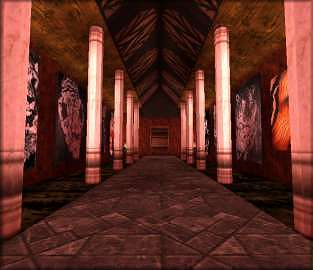
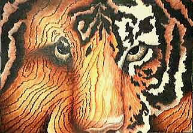
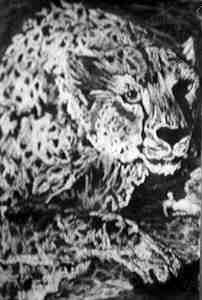
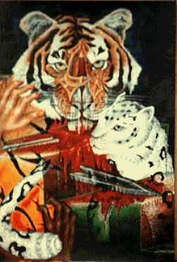
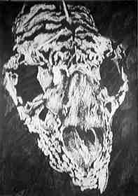
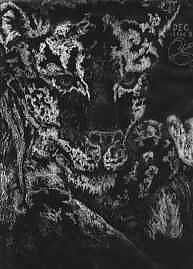
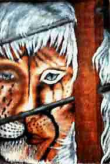
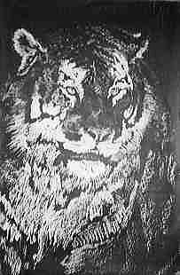
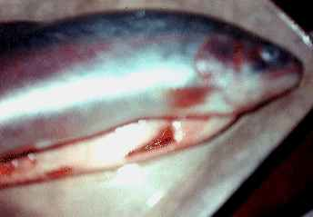

Aisle of Cats
`Don't take it too hard. Humans provide
some very important protein...`
- Hobbes Turning, you slowly walk down the Aisle of Cats. A high, domed ceiling rests on twin lines of pillars that flank you on either side. The walls are covered in murals, dozens of green eyes watch you as you walk - the feeling is distinctly creepy.
'Tiger's Eye' - 1996
Acrylic on card - 55K
There are few creatures more beautiful or majestic than the tiger, nor so threatened. I've always enjoyed playing with patterns, this picture was inspired by 'The Red Model' by Magritte - a master of Fantastic Art. The idea was to relate tiger stripes to wood-grain patterns. This is one of my larger pictures and was great fun to paint.
A certain petroleum company then stole my idea to plaster up on their petrol stations.. honest! ;-) |
 |
'Snow Leopard'
Wax resist - 18K
This is the first major picture I've done using the wax resist technique - later used in 'The Song of Aslan'. The technique involves rubbing candle wax over a pencil outline, then spreading writing ink over the entire image. The ink won't stick to the wax and as a result you get a reverse image, with patches of wax showing up in white.
The entire technique is very fast but also very 'iffy' as it's very hard to judge the amount of wax that needs to a applied. It's great for doing really big picture though - this one is about A1 size. |
 |
'Queen of the Winds' - 1996
Wax resist - 19K
Ever seen a cheetah run? Even only on TV? - these cats have been called the spotted wind - capable of hitting 70 mph, need you ask why? |
 |
'Hunter's Bane' - 1995
Acrylic on paper - 36K
This picture is based on one of a set of tarot cards I've been designing and drawing for some time. The set is a not a traditional tarot deck but consists entirely of major arcana, most of my invention and based around the five elements - fire, water, earth, air and void.
Hunter's Bane represents Hatred and Revenge when right edge up, and Honour and Loyalty when reversed. It also shows my feelings about hunting (for sport - hunting to live is rather a different matter.) |
 |
'Skull - 1996
Wax resist - 23K
Can any one identify the skull I used as a model? I got it from my school's biology department, but no one knows whom it once belonged to. Allusions to tigers here too. |
 |
'Sleek' - 1997
Acrylic and ink on paper - 18K
Mix and match between human and cat is an ongoing theme in my work. See 'The Shaman' in the Hall of Healers. If you want to know what and who Sleek is, then go back to the study and ask Karne for a story and what it's like to be a slave. |
 |
'The Cage' - 1996
Acrylic on paper - 28K
Another cat/human - this picture was the basis for the Shaman sculpture. The theme of course is loss of freedom. [pompous or what, yes? :-)] |
 |
'Life Lord' - 1996
Wax resist - 24K
A simple portrait this, I didn't think it needed anything else. By Life Lord, I am refering to the highest level predator in a food chain or ecosystem. I don't really consider man to be a real predator, since guns don't count! (much too easy...) |
 |
'Fish' - 1997
Photograph - 6K
Just a fish, yes, a fish, what's the problem? The poor thing got eaten soon after this but if Damian Hirst can do it with cows..(at least I ate the fish!) |
 |
Having run out of pictures you return back to then Hall of the Healers and take a look round the Alcove or the Aisle of Dragons. Or return to the study.
|

 © Michael.Wright 1999
© Michael.Wright 1999